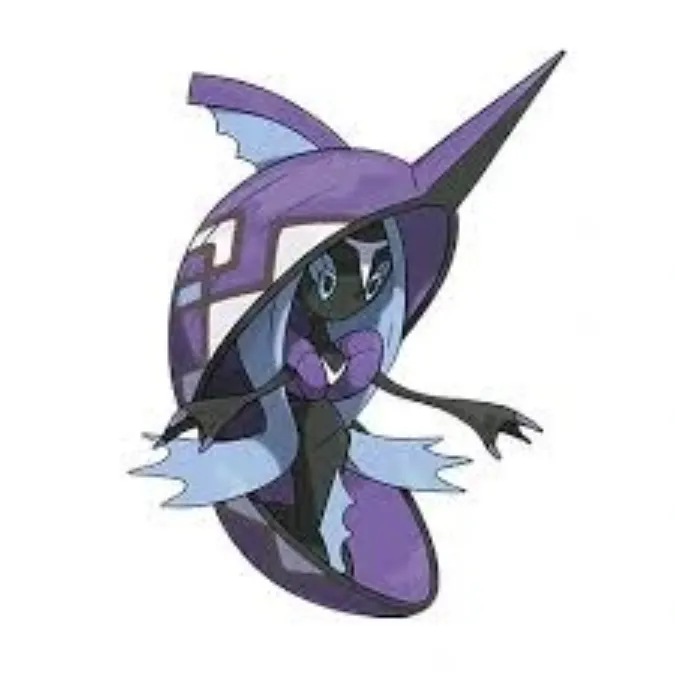

Quick facts
Species: Tapu Fini (Legendary)
Types: Water / Fairy
Primary weaknesses: Electric, Poison, Ground
Recommended lobby: 3–7 trainers
This guide is created for educational and informational purposes to help Pokémon GO players understand raid mechanics and improve gameplay strategy.
Tapu Fini is a Water/Fairy-type Legendary Raid Boss in Pokémon GO. With its dual typing, it has weaknesses to Electric, Grass, and Poison moves. Trainers must carefully select counters to defeat it efficiently.
This guide covers Tapu Fini’s weaknesses, recommended counters, movesets, CP ranges, weather boosts, shiny availability, and expert raid strategies for both beginners and experienced players.
Raid Boss: Tapu Fini
Type: Water / Fairy
Raid Tier: Legendary Raid
Major Weakness: Electric, Grass, Poison

Tapu Fini is one of the Mythical guardians in Pokémon GO, combining Water and Fairy typing. Its moveset allows it to deal heavy damage to a variety of attackers, but it is particularly vulnerable to Electric, Grass, and Poison-type moves.
Due to its Legendary status, defeating Tapu Fini requires proper planning and strong counters. Whether you are a new trainer or an expert preparing for a Legendary raid, this guide will provide all the information you need to succeed, including the best counters, recommended moves, CP ranges, and battle strategies.
| Category | Details |
|---|---|
| Weak to |
 Electric • Electric •
 Poison • Poison •
 Ground Ground
|
| Resists to |
 Bug • Bug •
 Dark • Dark •
 Fighting • Fighting •
 Fire • Fire •
 Ice • Ice •
 Water • Water •
 Dragon Dragon
|
Recommended Megas to use against Tapu Fini:
Tapu Fini has high stamina and charged moves like Moonblast and Hydro Pump, making it hard to take down without planning. Solo attempts are challenging; even in groups, shield management and counter rotation are essential to maintain DPS and avoid fainting.
Regular pokemon that amplify the right types give you a powerful edge. Below are top Regular counters with short notes on why they excel.
| Pokémon | Fast Moves | Charged Moves | Elite Moves | Best Moves |
|---|---|---|---|---|
| Kartana | Air Slash / Fury Cutter / Razor Leaf | Sacred Sword / Aerial Ace / X-Scissor / Leaf Blade / Night Slash | - | Razor Leaf (13) and Leaf Blade (70) |
| Regieleki | Lock-On / Thunder Shock / Volt Switch | Hyper Beam / Thunder / Zap Cannon | Thunder Cage | Volt Switch (13) and Thunder Cage (220) |
| Eternatus | Poison Jab / Dragon Tail | Flamethrower / Dragon Pulse / Sludge Bomb | Dynamax Cannon | Dragon Tail (14) and Dynamax Cannon (215) |
| Xurkitree | Thunder Shock / Spark | Power Whip / Discharge / Thunder / Dazzling Gleam | - | Thunder Shock / Spark (4) and Thunder / Dazzling Gleam (100) |
| Thundurus | Bite / Volt Switch | Focus Blast / Sludge Wave / Thunder / Thunderbolt | Wildbolt Storm | Volt Switch (13) and Wildbolt Storm (150) |
| Zekrom | Charge Beam / Dragon Breath | Flash Cannon / Wild Charge / Outrage / Crunch | Fusion Bolt | Charge Beam (7) and Fusion Bolt (140) |
| Sky Shaymin | Hidden Power / Magical Leaf / Zen Headbutt | Energy Ball / Grass Knot / Solar Beam / Seed Flare | - | Magical Leaf (17) and Solar Beam (180) |
| Zarude | Vine Whip / Bite | Power Whip / Energy Ball / Dark Pulse | - | Vine Whip / Bite (6) and Power Whip / Energy Ball (90) |
| Zacian | Metal Claw / Air Slash | Play Rough / Close Combat / Giga Impact / Behemoth Blade | - | Air Slash (12) and Giga Impact / Behemoth Blade (200) |
| Nihilego | Pound / Acid / Poison Jab | Gunk Shot / Sludge Bomb / Power Gem / Rock Slide | - | Poison Jab (13) and Gunk Shot (130) |
| Dusk Mane Necrozma | Shadow Claw / Metal Claw / Psycho Cut | Dark Pulse / Iron Head / Future Sight / Outrage / Sunsteel Strike | - | Shadow Claw / Metal Claw (6) and Sunsteel Strike (230) |
| Naganadel | Air Slash / Poison Jab | Acrobatics / Sludge Bomb / Fell Stinger / Dragon Pulse / Dragon Claw | - | Poison Jab (13) and Acrobatics (100) |
Shadow pokemon that amplify the right types give you a powerful edge. Below are top Shadow counters with short notes on why they excel.
| Pokémon | Fast Moves | Charged Moves | Elite Moves | Best Moves |
|---|---|---|---|---|
| Shadow Thundurus | Bite / Volt Switch | Focus Blast / Sludge Wave / Thunder / Thunderbolt | Wildbolt Storm | Volt Switch (13) and Wildbolt Storm (150) |
| Shadow Luxray | Hidden Power / Spark / Snarl | Hyper Beam / Wild Charge / Crunch | Psychic Fangs | Hidden Power (15) and Hyper Beam (150) |
| Shadow Sceptile | Fury Cutter / Bullet Seed | Aerial Ace / Earthquake / Leaf Blade / Dragon Claw / Breaking Swipe | Frenzy Plant | Bullet Seed (7) and Earthquake (140) |
| Shadow Overqwil | Poison Jab / Poison Sting | Sludge Bomb / Shadow Ball / Aqua Tail / Ice Beam / Aqua Tail | - | Poison Jab (13) and Shadow Ball (100) |
| Shadow Mewtwo | Psycho Cut / Confusion | Focus Blast / Flamethrower / Thunderbolt / Psychic / Ice Beam | Hyper Beam / Shadow Ball / Psystrike | Confusion (19) and Hyper Beam (150) |
| Shadow Venusaur | Razor Leaf / Vine Whip | Sludge / Sludge Bomb / Petal Blizzard / Solar Beam | Frenzy Plant | Razor Leaf (13) and Soalr Beam (180) |
| Shadow Raikou | Thunder Shock / Volt Switch | Aura Sphere / Shadow Ball / Thunder / Thunderbolt / Wild Charge | - | Volt Switch (13) and Aura Sphere / Shadow Ball / Thunder (100) |
| Shadow Zapdos | Charge Beam | Drill Peck / Ancient Power / Zap Cannon / Thunderbolt / Thunder | Thunder Shock | Charge Beam (7) and Zap Cannon (140) |
| Shadow Magnezone | Metal Sound / Spark / Charge Beam / Volt Switch | Flash Cannon / Mirror Shot / Zap Cannon / Wild Charge | - | Volt Switch (13) and Zap Cannon (140) |
| Shadow Chesnaught | Low Kick / Smack Down / Vine Whip | Superpower / Gyro Ball / Energy Ball / Solar Beam / Thunder Punch | Frenzy Plant | Smack Down (13) and Solar Beam (180) |
| Shadow Electivire | Low Kick / Thunder Shock | Thunder Punch / Thunder / Ice Punch / Wild Charge | Flamethrower | Low Kick (5) and Thunder (100) |
| Shadow Tangrowth | Infestation / Vine Whip | Sludge Bomb / Ancient Power / Rock Slide / Solar Beam / Power Whip | - | Infestation (9) and Solar Beam (180) |
Mega pokemon that amplify the right types give you a powerful edge. Below are top Mega counters with short notes on why they excel.
| Pokémon | Fast Moves | Charged Moves | Elite Moves | Best Moves |
|---|---|---|---|---|
| Mega Rayquaza | Air Slash / Dragon Tail | Aerial Ace / Dragon Ascent / Ancient Power / Outrage | Hurricane / Breaking Swipe | Dragon Tail (14) and Dragon Ascent (140) |
| Mega Venusaur | Razor Leaf / Vine Whip | Sludge / Sludge Bomb / Petal Blizzard / Solar Beam | Frenzy Plant | Razor Leaf (13) and Soalr Beam (180) |
| Mega Manectric | Charge Beam / Thunder Fang / Snarl | Flame Burst / Overheat / Thunder / Wild Charge / Psychic Fangs | - | Snarl (11) and Overheat (160) |
| Mega Beedrill | Poison Jab / Poison Sting / Infestation | Aerial Ace / Sludge Bomb / X-Scissor / Fell Stinger | Bug Bite / Drill Run | Poison Jab (13) and Sludge Bomb / Drill Run (85) |
| Mega Sceptile | Fury Cutter / Bullet Seed | Aerial Ace / Earthquake / Leaf Blade / Dragon Claw / Breaking Swipe | Frenzy Plant | Bullet Seed (7) and Earthquake (140) |
| Mega Gengar | Hex / Shadow Claw / Sucker Punch | Focus Blast / Drain Punch / Sludge Bomb / Shadow Ball | Lick / Sludge Wave / Shadow Punch / Psychic / Dark Pulse | Hex (8) and Focus Blast (140) |
Tapu Fini common fast moves are Water Gun or Hidden Power. Charged moves include Ice Beam or Moonblast or Surf or Hydro Pump. Elite moves include Nature's Madness .
Dangerous Moves: Moonblast and Ice Beam can hit many Grass and Dragon attackers very hard.
Hydro Pump and Moonblast deal heavy damage, so dodging can help save your team.
A strong Tapu Fini raid team should include:
Using Mega Venusaur, Mega Gengar, or Mega Beedrill will significantly boost your team’s overall damage output.
Tapu Fini is boosted in Rainy and Cloudy weather, making it stronger and harder to defeat.
Your counters are boosted in:
Tapu Fini is useful for Pokédex completion and PvP formats, but it is not a top-tier Water-type attacker for raids.
Yes, trainers have a chance to encounter a Shiny Tapu Fini after completing the raid. While rare, Shiny Tapu Fini has a slightly darker and more vivid color palette, making it highly desirable for collectors.
Participating in multiple raids increases your chances of finding the shiny version. Remember, the Shiny Tapu Fini can only be caught after successfully defeating it in the raid.
Yes! Shiny Tapu Fini is available during select events and raid hours.
Tapu Fini can use moves like Hydro Pump, Surf, and Moonblast, dealing powerful Water and Fairy-type damage to raid challengers.
Tapu Fini has solid defenses and can survive for a long time in raids. However, strong Electric or Grass-type attackers can defeat it efficiently.
Its Water/Fairy typing, guardian deity role in the Alola region, and mystical appearance make Tapu Fini one of the most elegant Legendary Pokémon in raid battles.
Tapu Fini is a bulky and defensive raid boss, but with strong Electric, Grass, and Poison-type Pokémon, proper team setup, and a Mega boost, it can be defeated efficiently. Bring the right counters and secure this Alolan Legendary Pokémon.